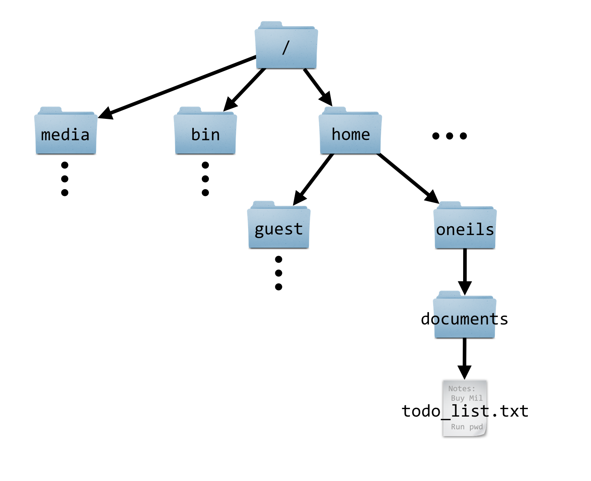

Chapter 3 The Command Line and Filesystem
Computer users are used to interacting with a “user interface.” On many computers, this interface displays the desktop or task bar, icons, file previews, and so on. It takes input from the user in the form of keystrokes, mouse movements, and in some cases voice commands, and presents the results of the user’s actions. Perhaps most importantly, the user interface is itself a program (it is software running on a computer, after all) we interact with to execute other programs.
The same thing happens when we use SSH to log in to a remote machine, or open up the Terminal application on a Linux or OS X desktop. In this case, however, instead of interacting with a GUI (Graphical User Interface), we interact with a CLI (Command-Line Interface), or shell, which does the job of displaying the command prompt. The shell is the software we interact with on the command line. In some sense it is the command line, as it displays the command prompt, accepts input via typed text, runs other programs on our behalf, and displays the results textually. A command prompt is a line of status information provided in a text-based interface, indicating that commands are to be entered and run by pressing Enter. Command prompts often include information about what computer or network one is logged in to, the username one is logged in with, and an indication of the “present working directory” (discussed below).
The first command that we’ll learn for the Linux command line is echo, which prints the parameters we give it.
[oneils@mbp ~]$ echo hello there
hello there
Let’s break down the command prompt and the program that we ran, which consisted of a program name and several parameters, separated by spaces. In the figure below, the command prompt consists of oneils@mpb ~$.
[oneils@mbp ~]$ export GREETING='hello $USER'
[oneils@mbp ~]$ echo $GREETING
hello $USER
[oneils@mbp ~]$ export GREETING="hello $USER"
[oneils@mbp ~]$ echo $GREETING
hello oneils
The echo program might seem absurdly simple, as it just prints its parameters. But it is quite useful in practice and as a learning tool. For example, we can use echo to print not only simple strings, but also the contents of an environment variable, which is a variable bit of information (usually holding strings of text) that is accessible by the shell and other programs the user runs. Accessing the contents of an environment variable requires prefixing it with a $.
The shell (and other programs) commonly uses environment variables to store information about your login session, much like how, in a GUI interface, a “variable” remembers the wallpaper picture for the desktop. Environment variables control many aspects of the command-line environment, and so they are quite important. Many of these are set automatically when we log in. For example, $USER.
[oneils@mbp ~]$ echo $USER
oneils
Setting Environment Variables, Dealing with Spaces
Setting environment variables is something we’ll have to know how to do eventually, but learning now will give us an opportunity to discuss some of the finer points of how the shell interprets our commands. In bash, the most commonly used shell, setting environment variables is done with the export command, taking as the first parameter what the variable name should be (without the $) and what it should be set to.
[oneils@mbp ~]$ export GREETING=hello
[oneils@mbp ~]$ echo $GREETING
hello
Because export expects as its first parameter the variable description, we’ll get an odd result if we include a space in our greeting, as the shell uses spaces to separate parameters.
[oneils@mbp ~]$ export GREETING=hello everyone
[oneils@mbp ~]$ echo $GREETING
hello
In the above, GREETING=hello was taken to be first parameter, and the second, everyone, was ignored by the export command. There are at least two ways to get around this problem. The first is to prefix any character that the shell deems special (like spaces) with a backslash, or \, thereby “escaping” it so that it is ignored by the shell as a special character. Alternatively, we can wrap a string in quotation marks to have it treated literally by the shell.
[oneils@mbp ~]$ export GREETING=hello\ everyone
[oneils@mbp ~]$ echo $GREETING
hello everyone
[oneils@mbp ~]$ export GREETING='hello everyone'
[oneils@mbp ~]$ echo $GREETING
hello everyone
The primary difference between using single and double quotation marks is whether variables inside the string are expanded to their contents or not.
[oneils@mbp ~]$ export GREETING='hello $USER'
[oneils@mbp ~]$ echo $GREETING
hello $USER
[oneils@mbp ~]$ export GREETING="hello $USER"
[oneils@mbp ~]$ echo $GREETING
hello oneils
Note that when setting an environment variable, we do not use the $. By convention, environment variable names contain only capital letters.6 Further, this expansion (from environment variables to their contents) is done by the shell; the command itself is changed from export GREETING="hello $USER" to export GREETING="hello oneils".
Alternative Shells
There is a special environment variable, $0, that generally holds the name of the currently running program. In the case of our interaction with the command line, this would be the name of the interface program itself, or shell.
[oneils@mbp ~]$ echo $0
-bash
The above command illustrates that we are running bash, the most commonly used shell.7
Depending on the system you are logged in to, running echo $0 may not report bash. The reason is (although it may seem odd) that there are a variety of shells available, owing to the long history of Unix and Linux. In the beginning, the interfaces were quite simple, but over time better interfaces/shells were developed that included new features (consider how the “Start” menu has changed over the years on Microsoft Windows versions). We can run a different shell, if it is installed, by simply running it like any other program. The tcsh shell, itself an outgrowth of the csh shell, is sometimes the default instead of bash. (Both csh and tcsh are older than bash.)
[oneils@mbp ~]$ tcsh
172:~> echo $0
tcsh
When running tcsh, the setenv command takes the place of export, and the syntax is slightly different.
172:~> setenv GREETING "hello $USER"
172:~> echo $GREETING
hello oneils
Although bash and similar shells like dash and zsh are most commonly found (and recommended), you might find yourself needing to use a shell like csh or its successor, tcsh. In this book, the assumption is that you are using bash, but when different commands would be needed to accomplish the same thing in the older tcsh or csh, a footnote will explain.
To get back to bash from tcsh, a simple exit will suffice.
172:~> exit
exit
[oneils@mbp ~]$ echo $0
-bash
In general, it can be difficult to determine which shell is running on the basis of the look of the command prompt; using echo $0 right on the command line is the most reliable way.
Files, Directories, and Paths
With some of the more difficult concepts of the shell out of the way, let’s turn to something a bit more practical: understanding how directories (also known as folders) and files are organized.
Most filesystems are hierarchical, with files and directories stored inside other directories. In Unix-like operating systems, the “top level” directory in which everything can be found is known as / (a forward slash). This top-level directory is sometimes called the root of the filesystem, as in the root of the filesystem tree. Within the root directory, there are commonly directories with names like bin, etc, media, and home; the last of these is often where users will store their own individual data.8

Each file and directory in the filesystem can be uniquely identified by its absolute path, a unique locator for a file or directory in the filesystem, starting with the root folder / and listing each directory on the way to the file. In the figure above, the absolute path to the todo_list.txt file is /home/oneils/documents/todo_list.txt.
Note that an absolute path must start with the leading forward slash, indicating that the path starts at the root folder /, and contain a valid path of folder names from there. (If you prefer to consider / as a folder name itself, an absolute path can also be specified like //home/oneils/documents/todo_list.txt, though using two forward slashes is considered redundant.)
Every user normally has a home directory, serving as a personal storage locker for files and directories. (Often the amount of space available this location is not as much as users would like.) The shell and other programs can find out the absolute path to your home directory via the environment variable $HOME; try running echo $HOME to see the absolute path to your own home directory.
What about special devices like CD-ROM drives and network drives? On a Windows operating system, these would get their own “root” directory with names like D: and E: (with the main hard drive usually having the name C:). On Unix-based operating systems, there is only ever one filesystem hierarchy, and the top level is always /. Special devices like CD-ROM drives and network drives are mounted somewhere in the filesystem. It may be that the directory /media remains empty, for example, but when a CD-ROM is inserted, a new directory may appear inside that directory, perhaps with the absolute path /media/cdrom0, and the files on the CD-ROM will appear in that location.
Determining how and where such devices are mounted is the job of the system administrator. On OS X machines, inserted devices appear in /Volumes. If you are logged in to a large computational infrastructure, your home directory likely isn’t located on the internal hard drive of the remote computer, but rather mounted from a network drive present on yet another remote computer. This configuration allows users to “see” the same filesystem hierarchy and files no matter which remote computer they happen to log in to, if more than one is available. (For example, even /home might be a network mount, and so all users’ home directories might be available on a number of machines.)
Getting around the Filesystem
It is vitally important to understand that, as we are working in the command-line environment, we always have a “place”, a directory (or folder) in which we are working called the present working directory, or PWD. The shell keeps track of the present working directory in an environment variable, $PWD.
When you first log in, your present working directory is set to your home directory; echo $PWD and echo $HOME will likely display the same result. There is also a dedicated program for displaying the present working directory, called pwd.
[oneils@mbp ~]$ echo $HOME
/home/oneils
[oneils@mbp ~]$ echo $PWD
/home/oneils
[oneils@mbp ~]$ pwd
/home/oneils
We can list the files and directories that are stored in the present working directory by using the ls command.
[oneils@mbp ~]$ ls
apcb Documents Music Public todo_list.txt
Desktop Downloads Pictures Templates Videos
This command reveals that I have a number of directories in my home directory (/home/oneils) with names like Music and Pictures (helpfully colored blue) and a file called todo_list.txt.
We can change the present working directory—that is, move to another directory—by using the cd command, giving it the path that we’d like to move to.
[oneils@mbp ~]$ cd /home
[oneils@mbp /home]$ echo $PWD
/home
[oneils@mbp /home]$ ls
lost+found oneils
Notice that the command prompt has changed to illustrate the present working directory: now it shows oneils@mpb /home$, indicating that I am in /home. This is a helpful reminder of where I am in the filesystem as I work. Previously, it showed only ~, which is actually a shortcut for $HOME, itself a shortcut for the absolute path to my home directory. Consequently, there are a number of ways to go back to my home directory: cd /home/oneils, or cd $HOME, or cd ~, or even just cd with no arguments, which defaults to moving to $HOME.
[oneils@mbp /home]$ cd $HOME
[oneils@mbp ~]$ pwd
/home/oneils
There is another type of variable known as a “shell variable”, which operates similar to environment variables. There are some differences: (1) by convention, these have lowercase names; (2) they are set differently, in
bashby usingdeclareinstead ofexport; and (3) they are available only to the shell, not other programs that you might run. The distinction between these two types can cause headaches on occasion, but it isn’t crucial enough to worry about now.↩︎Because
$0holds the name of the currently running program, one might expectecho $0to result inechobeing reported, but this isn’t the case. As mentioned previously, the shell replaces the environment variables with their contents before the command is executed.↩︎Computer scientists and mathematicians usually draw trees upside down. One theory is that trees are easier to draw upside down when working on a blackboard, the traditional (and still considered by many the best) medium of exposition for those fields. Our language reflects this thinking: when we move a file, we move it “down” into a subdirectory, or “up” into a directory “above” the current one.↩︎